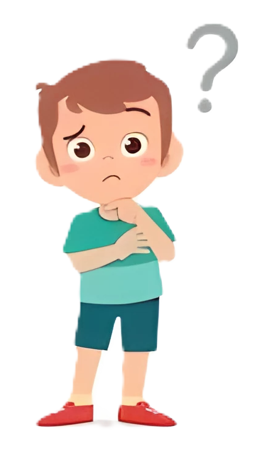
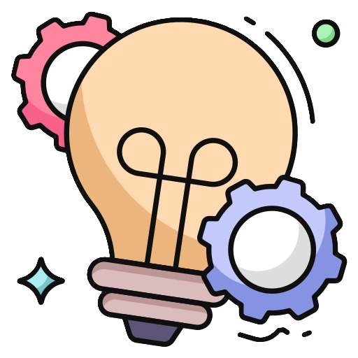

A
Jenis transformasi
Refleksi / Pencerminan
Cermin,
benda yang biasa digunakan untuk melihat pantulan diri sendiri.
benda yang biasa digunakan untuk melihat pantulan diri sendiri.

Seorang anak bernama Wahyu sedang bersiap untuk pergi ke sekolah. Sebelum berangkat,
dia ingin bercermin dulu.

Saat Wahyu bercermin, bagaimana bayangan Wahyu yang seharusnya?
A
B
C

Saat bercermin, Wahyu mendekat ke cermin karena ingin melihat bayangannya lebih jelas.
Menurut kamu, apa yang terjadi saat Wahyu mendekat ke cermin?
A
Bayangan Wahyu juga mendekat ke cermin
B
Bayangan Wahyu menjauh
Pada ilustrasi di bawah, gerakkanlah Wahyu dan amati jarak bayangan Wahyu ke cermin

Wahyu
Wahyu'

Apa yang kamu simpulkan dari peristiwa yang dialami Wahyu?

Apakah Wahyu dan bayangannya memiliki bentuk yang sama?
Apakah Wahyu dan bayangannya saling berhadapan?
Apakah jarak Wahyu ke cermin selalu sama dengan jarak bayangannya ke cermin?

Kesimpulan kamu diatas kita menyebutnya sebagai
SIFAT BAYANGAN CERMIN
Jadi, Apa itu Refleksi?

Refleksi adalah transformasi yang memindahkan setiap titik pada suatu bidang berdasarkan sifat bayangan cermin.

Tes Pemahaman
TES PERTAMA
Sebuah segitiga ABC dicerminkan / direfeksikan terhadap garis horizontal. Manakah yang sesuai sifat bayangan cermin?
A
B
C
A'
B'
C'
A
B
C
A'
B'
C'
A
B
C
A'
C'
B'
Animasi
Kamu bisa eksplorasi pencerminan bangun datar terhadap garis pada di bawah ini yaa!

* Kamu bisa mengubah letak titik sudut segitiga ABC dan garis cerminnya

Ternyata tiitk juga bisa memantukan bangun datar lohh.
* Kamu bisa mengubah letak titik sudut segitiga ABC dan titik cerminnya
Apa yang membedakan pencerminan pada garis dan pencerminan pada titik?
Tes Pemahaman
TES KEDUA
Sebuah trapesium ABCD direfleksikan terhadap sebuah titik P. Manakah refleksi yang benar?
Animasi

Berikutnya lihatlah beberapa contoh pencerminan di kordinat kartesius!

Titik A ( 2 , 2 ) direfleksikan terhadap garis y = 0.

A
A'
Diketahui:
Sumbu cerminnya adalah y = 0 artinya garis horizontal yang terletak sepanjang sumbu-x
Catatan:
Karena objek yang direfleksikan sebuah titik, dimana titik tidak memiliki bentuk maka yang diperhatikan hanyalah jarak objek ke sumbu cermin
Diperoleh:
Titik A' ( 2 , -2 )

Segitiga ABC dengan kordinat A ( 4 , 3 ), B ( 2 , 2 ), dan C ( 3 , -1 ) yang akan dicerminkan pada garis x = 1
A
B
C
A'
B'
C'
Diketahui:
Sumbu cerminnya adalah x = 1 artinya garis vertikal. Sifat Refleksi yang diperhatikan seperti biasa yakni jarak, bentuk, dan harus berhadapan.
Diperoleh:
Segitiga A'B'C' dengan kordinat A' ( -2 , -3 ), B' ( 0 , 2 ), C' ( -1 , -1 )

Segitiga ABC dengan kordinat A ( -2 , 4 ), B ( -2 , 1 ), dan C ( -3 , 1 ) yang akan dicerminkan pada titik ( -1 , 1 )
A
B
C
A'
B'
C'
Diketahui:
Sumbu cerminnya adalah titik ( -1 , 1 ) artinya sifat refleksi tetap berlaku namun bangun datar seperti terbalik
Diperoleh:
Segitiga A'B'C' dengan kordinat A' ( 1 , -2 ), B' ( 0 , 1 ), C' ( 1 , 1 )

Jenis transformasi selanjutnya adalah rotasi
Sebelum lanjut ke rotasi, kerjakan dulu tes pemahaman di bawah ya!
Tes Pemahaman
TES KETIGA
Terdapat titik A ( 2 , 3 ). Jika titik A direfleksikan terhadap garis x = -1, tentukan kordinat titik A'
Klik pada kordinat untuk memunculkan titik lalu cek jawabanmu pada tombol "Check"
TES KEEMPAT
Terdapat segitiga ABC. Segitiga ABC direfleksikan terhadap garis y = x, tentukan kordinat segitiga A'B'C'
A
B
C
Pindahkan titik-titik sudut segitiga hijau hingga membentuk kordinat segitiga A'B'C'